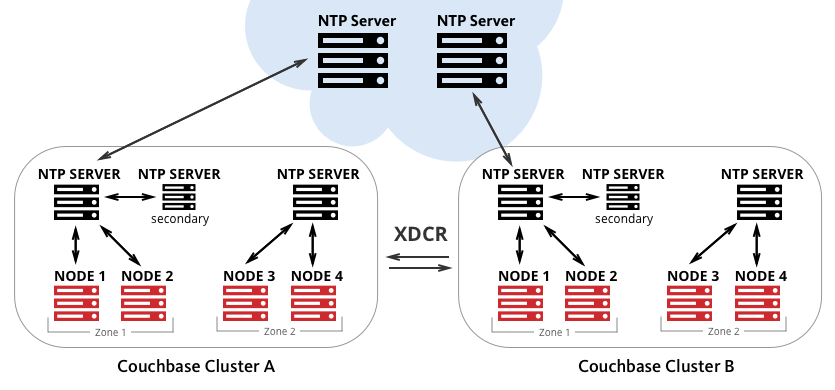

Clock Sync with NTP
Network Time Protocol (NTP) is used to synchronize time across multiple servers. The purpose of NTP is to keep an individual node’s clock 'accurate'. This is done by having the node periodically synchronize its clock with a reference server. You can specify multiple servers to provide redundancy in case one or more time servers are unavailable. Correct time synchronisation is important in Couchbase Server for Expiry behavior and to maintain accurate synchronicity in timestamp-based conflict resolution (see Time Synchronization).
| In a multi-cluster environment, it is important for all the nodes in the cluster to have the same time from a global perspective. In other words, all the nodes must synchronize with the same reference server and time. |
Time Sync Configuration
The following figure illustrates the recommended topology for time synchronization using NTP. 
You should install local NTP Servers and also have more than one NTP server for fault tolerance. Each Couchbase Server node should have NTP Client configured which synchronize time with local NTP Server.
NTP server on each cluster should ideally reference same NTP server on the Internet to have the same time.
Basic Setup and Configuration
NTP Server Configuration
For detailed information on how to setup, best practices, and advanced configuration about NTP, refer to http://www.ntp.org/.
Recommended NTP Server Configuration
There are different NTP deployment models available for NTP clients installed on Couchbase nodes to synchronize time such as:
-
Using an external NTP server to synchronize each Couchbase node independently.
-
Using a dedicated NTP server ( a core server, possibly running on a separate instance) within the Couchbase cluster. This server is synchronized with external NTP servers (over the Internet) while the rest of the cluster will synchronize with this one.
-
Using a dedicated pool of NTP servers within the Couchbase cluster. These NTP servers within a pool synchronize with external NTP servers (over the Internet) while the rest of the cluster will synchronize with this one.
|
NTP Client Configuration
To synchronize clocks effectively on a Couchbase Server cluster, you must:
-
Start NTP on each node.
Start NTP by starting the NTP service, or daemon, on your system. On most systems, starting the NTP daemon happens automatically on startup. You do not need to perform this action manually. However, if you need to make adjustments to the NTP configuration, it is useful to know how to stop and start the service.
For example, the following command starts the daemon:
$ service ntp start -x
-
Point each instance of NTP to the same set of reference servers.
Specify the time server(s) in the NTP configuration file (usually /etc/ntp.conf). You can specify multiple servers, one server per line.
It is recommended to setup your own NTP server and sync NTP clients.
server ntp1.phx.xxx.com server ntp2.phx.xxx.com
The configuration file is read when the NTP service starts. So, if you change the configuration file after NTP is running, stop and restart the service to have the new configuration options take effect.
Once ntp.conf is configured with correct settings, start the
ntpdaemon./etc/init.d/ntp start
You will see the NTP will slowly start to synchronize the time of your Linux machine with the NTP Server.
As noted in the NTP documentation, it is important to remember that ntpdatewith contrivedcronscripts is no substitute for the NTP daemon, which uses sophisticated algorithms to maximize accuracy and reliability while minimizing resource use.
Verifying Your NTP Configuration
To verify that your NTP configuration is working properly, run the following:
-
Use the
ntpstatcommand to view the status of the NTP service on the instance.[ec2-user ~]$ ntpstat
If your output resembles the output below, then NTP is working properly on the instance.
synchronised to NTP server (12.34.56.78) at stratum 3 time correct to within 399 ms polling server every 64 s
If your output states "
unsynchronised", wait for about a minute and try again. The first synchronization may take a minute to complete.Do not start XDCR until every node in each cluster says synchronized. If your output states "
Unable to talk to NTP daemon. Is it running?", you probably need to start the NTP service and enable it to automatically start at boot time. -
(Optional) You can use the
ntpq -pcommand to see a list of peers known to the NTP server and a summary of their state.[ec2-user ~]$ ntpq -p remote refid st t when poll reach delay offset jitter ================================================================================ +lttleman.deekay 204.9.54.119 2 u 15 128 377 88.649 5.946 6.876 -bittorrent.tomh 91.189.94.4 3 u 133 128 377 182.673 8.001 1.278 *ntp3.junkemailf 216.218.254.202 2 u 68 128 377 29.377 4.726 11.887 +tesla.selinc.co 149.20.64.28 2 u 31 128 377 28.586 -1.215 1.435
If the output of this command shows no activity, check whether your security groups, network ACLs, or firewalls block access to the NTP port.